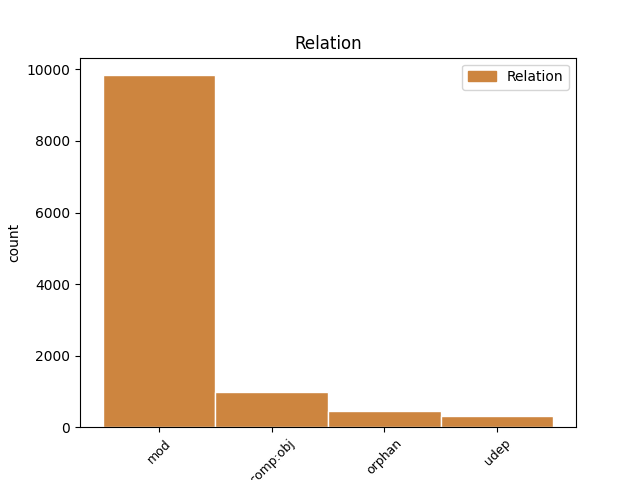

Distribution of features within this leaf

Agreement Rules sorted by frequency.
- When the dependent token is the modifer(mod) of the head token, and the dependent token is NOUN.
1 vel _ _ _ _ 0 _ _ _
2 materia _ _ _ _ 0 _ _ _
3 erit _ _ _ _ 0 _ _ _
4 principium _ _ _ _ 0 _ _ _
5 distinctionis distinctio NOUN C1|grn1|casB|gen2 Case=Gen|Degree=Pos|Gender=Fem|Number=Sing 0 _ _ _
6 formarum forma NOUN A1|grn1|casK|gen2 Case=Gen|Degree=Pos|Gender=Fem|Number=Plur 5 mod _ SpaceAfter=No
7 ; _ _ _ _ 0 _ _ _
1 ad _ _ _ _ 0 _ _ _
2 secundum _ _ _ _ 0 _ _ _
3 dicendum _ _ _ _ 0 _ _ _
4 quod _ _ _ _ 0 _ _ _
5 substantiae _ _ _ _ 0 _ _ _
6 quae _ _ _ _ 0 _ _ _
7 sunt _ _ _ _ 0 _ _ _
8 formae _ _ _ _ 0 _ _ _
9 subsistentes _ _ _ _ 0 _ _ _
10 , _ _ _ _ 0 _ _ _
11 non _ _ _ _ 0 _ _ _
12 habent _ _ _ _ 0 _ _ _
13 causam _ _ _ _ 0 _ _ _
14 aliquam _ _ _ _ 0 _ _ _
15 formalem _ _ _ _ 0 _ _ _
16 sui _ _ _ _ 0 _ _ _
17 esse _ _ _ _ 0 _ _ _
18 et _ _ _ _ 0 _ _ _
19 suae _ _ _ _ 0 _ _ _
20 unitatis _ _ _ _ 0 _ _ _
21 , _ _ _ _ 0 _ _ _
22 nec _ _ _ _ 0 _ _ _
23 causam _ _ _ _ 0 _ _ _
24 agentem _ _ _ _ 0 _ _ _
25 per _ _ _ _ 0 _ _ _
26 transmutationem _ _ _ _ 0 _ _ _
27 materiae _ _ _ _ 0 _ _ _
28 de _ _ _ _ 0 _ _ _
29 potentia _ _ _ _ 0 _ _ _
30 in _ _ _ _ 0 _ _ _
31 actum _ _ _ _ 0 _ _ _
32 , _ _ _ _ 0 _ _ _
33 sed _ _ _ _ 0 _ _ _
34 habent _ _ _ _ 0 _ _ _
35 causam _ _ _ _ 0 _ _ _
36 producentem produco VERB N2|modD|tem1|grp1|casD|gen2 Case=Acc|Degree=Pos|Gender=Fem|Number=Sing|Tense=Pres|VerbForm=Part|Voice=Act 0 _ _ _
37 totam _ _ _ _ 0 _ _ _
38 substantiam substantia NOUN A1|grn1|casD|gen2|vgr1 Case=Acc|Degree=Pos|Gender=Fem|Number=Sing 36 comp:obj _ SpaceAfter=No
39 . _ _ _ _ 0 _ _ _
1 unde _ _ _ _ 0 _ _ _
2 post _ _ _ _ 0 _ _ _
3 verba _ _ _ _ 0 _ _ _
4 praemissa _ _ _ _ 0 _ _ _
5 , _ _ _ _ 0 _ _ _
6 philosophus _ _ _ _ 0 _ _ _
7 concludit _ _ _ _ 0 _ _ _
8 quod _ _ _ _ 0 _ _ _
9 in _ _ _ _ 0 _ _ _
10 his _ _ _ _ 0 _ _ _
11 quae _ _ _ _ 0 _ _ _
12 sunt _ _ _ _ 0 _ _ _
13 composita _ _ _ _ 0 _ _ _
14 ex _ _ _ _ 0 _ _ _
15 materia _ _ _ _ 0 _ _ _
16 et _ _ _ _ 0 _ _ _
17 forma _ _ _ _ 0 _ _ _
18 , _ _ _ _ 0 _ _ _
19 nulla _ _ _ _ 0 _ _ _
20 est _ _ _ _ 0 _ _ _
21 alia _ _ _ _ 0 _ _ _
22 causa _ _ _ _ 0 _ _ _
23 nisi _ _ _ _ 0 _ _ _
24 movens _ _ _ _ 0 _ _ _
25 ex _ _ _ _ 0 _ _ _
26 potestate _ _ _ _ 0 _ _ _
27 ad _ _ _ _ 0 _ _ _
28 actum _ _ _ _ 0 _ _ _
29 , _ _ _ _ 0 _ _ _
30 quaecumque _ _ _ _ 0 _ _ _
31 vero _ _ _ _ 0 _ _ _
32 non _ _ _ _ 0 _ _ _
33 habent _ _ _ _ 0 _ _ _
34 materiam _ _ _ _ 0 _ _ _
35 , _ _ _ _ 0 _ _ _
36 omnia _ _ _ _ 0 _ _ _
37 simpliciter _ _ _ _ 0 _ _ _
38 sunt _ _ _ _ 0 _ _ _
39 quod _ _ _ _ 0 _ _ _
40 vere _ _ _ _ 0 _ _ _
41 entia ens NOUN C1|grn1|casJ|gen3 Case=Nom|Degree=Pos|Gender=Neut|Number=Plur 0 _ _ _
42 aliquid aliquid NOUN F1|grn1|casA|gen3 Case=Nom|Degree=Pos|Gender=Neut|Number=Sing 41 orphan _ SpaceAfter=No
43 . _ _ _ _ 0 _ _ _
1 quia _ _ _ _ 0 _ _ _
2 caelum _ _ _ _ 0 _ _ _
3 , _ _ _ _ 0 _ _ _
4 cum _ _ _ _ 0 _ _ _
5 sit _ _ _ _ 0 _ _ _
6 secundum _ _ _ _ 0 _ _ _
7 suam _ _ _ _ 0 _ _ _
8 naturam _ _ _ _ 0 _ _ _
9 incorruptibile _ _ _ _ 0 _ _ _
10 , _ _ _ _ 0 _ _ _
11 habet _ _ _ _ 0 _ _ _
12 materiam _ _ _ _ 0 _ _ _
13 quae _ _ _ _ 0 _ _ _
14 non _ _ _ _ 0 _ _ _
15 potest _ _ _ _ 0 _ _ _
16 subesse _ _ _ _ 0 _ _ _
17 alteri _ _ _ _ 0 _ _ _
18 formae _ _ _ _ 0 _ _ _
19 , _ _ _ _ 0 _ _ _
20 unde _ _ _ _ 0 _ _ _
21 impossibile _ _ _ _ 0 _ _ _
22 est _ _ _ _ 0 _ _ _
23 quod _ _ _ _ 0 _ _ _
24 firmamentum _ _ _ _ 0 _ _ _
25 sit _ _ _ _ 0 _ _ _
26 factum _ _ _ _ 0 _ _ _
27 ex _ _ _ _ 0 _ _ _
28 materia _ _ _ _ 0 _ _ _
29 prius _ _ _ _ 0 _ _ _
30 tempore tempus NOUN C1|grn1|casF|gen3 Case=Abl|Degree=Pos|Gender=Neut|Number=Sing 31 udep _ _
31 existente exsisto VERB L2|modD|tem1|grp1|casF|gen2 Case=Abl|Degree=Pos|Gender=Fem|Number=Sing|Tense=Pres|VerbForm=Part|Voice=Act 0 _ _ _
32 . _ _ _ _ 0 _ _ _
Disagree Examples:
1 perfectio perfectio NOUN C1|grn1|casA|gen2 Case=Nom|Degree=Pos|Gender=Fem|Number=Sing 0 _ _ _
2 autem _ _ _ _ 0 _ _ _
3 operationis operatio NOUN C1|grn1|casB|gen2|vgr1 Case=Gen|Degree=Pos|Gender=Fem|Number=Sing 1 mod _ _
4 dependet _ _ _ _ 0 _ _ _
5 ex _ _ _ _ 0 _ _ _
6 quatuor _ _ _ _ 0 _ _ _
7 . _ _ _ _ 0 _ _ _
1 et _ _ _ _ 0 _ _ _
2 ideo _ _ _ _ 0 _ _ _
3 talis _ _ _ _ 0 _ _ _
4 operatio operatio NOUN C1|grn1|casA|gen2|vgr1 Case=Nom|Degree=Pos|Gender=Fem|Number=Sing 0 _ _ _
5 intellectualis _ _ _ _ 0 _ _ _
6 naturae natura NOUN A1|grn1|casB|gen2|vgr1 Case=Gen|Degree=Pos|Gender=Fem|Number=Sing 4 mod _ _
7 non _ _ _ _ 0 _ _ _
8 est _ _ _ _ 0 _ _ _
9 beatitudo _ _ _ _ 0 _ _ _
10 sive _ _ _ _ 0 _ _ _
11 felicitas _ _ _ _ 0 _ _ _
12 . _ _ _ _ 0 _ _ _
1 secundo _ _ _ _ 0 _ _ _
2 , _ _ _ _ 0 _ _ _
3 ex _ _ _ _ 0 _ _ _
4 principio principium NOUN B1|grn1|casF|gen3 Case=Abl|Degree=Pos|Gender=Neut|Number=Sing 0 _ _ _
5 operationis operatio NOUN C1|grn1|casB|gen2|vgr1 Case=Gen|Degree=Pos|Gender=Fem|Number=Sing 4 mod _ SpaceAfter=No
6 : _ _ _ _ 0 _ _ _
7 ut _ _ _ _ 0 _ _ _
8 sit _ _ _ _ 0 _ _ _
9 altissimae _ _ _ _ 0 _ _ _
10 potentiae _ _ _ _ 0 _ _ _
11 . _ _ _ _ 0 _ _ _
1 unde _ _ _ _ 0 _ _ _
2 secundum _ _ _ _ 0 _ _ _
3 operationem operatio NOUN C1|grn1|casD|gen2|vgr1 Case=Acc|Degree=Pos|Gender=Fem|Number=Sing 0 _ _ _
4 sensus sensus NOUN D1|grn1|casB|gen1 Case=Gen|Degree=Pos|Gender=Masc|Number=Sing 3 mod _ _
5 non _ _ _ _ 0 _ _ _
6 est _ _ _ _ 0 _ _ _
7 in _ _ _ _ 0 _ _ _
8 nobis _ _ _ _ 0 _ _ _
9 felicitas _ _ _ _ 0 _ _ _
10 , _ _ _ _ 0 _ _ _
11 sed _ _ _ _ 0 _ _ _
12 secundum _ _ _ _ 0 _ _ _
13 operationem _ _ _ _ 0 _ _ _
14 intellectus _ _ _ _ 0 _ _ _
15 et _ _ _ _ 0 _ _ _
16 per _ _ _ _ 0 _ _ _
17 habitum _ _ _ _ 0 _ _ _
18 perfecti _ _ _ _ 0 _ _ _
19 . _ _ _ _ 0 _ _ _
1 unde _ _ _ _ 0 _ _ _
2 secundum _ _ _ _ 0 _ _ _
3 operationem _ _ _ _ 0 _ _ _
4 sensus _ _ _ _ 0 _ _ _
5 non _ _ _ _ 0 _ _ _
6 est _ _ _ _ 0 _ _ _
7 in _ _ _ _ 0 _ _ _
8 nobis _ _ _ _ 0 _ _ _
9 felicitas _ _ _ _ 0 _ _ _
10 , _ _ _ _ 0 _ _ _
11 sed _ _ _ _ 0 _ _ _
12 secundum _ _ _ _ 0 _ _ _
13 operationem operatio NOUN C1|grn1|casD|gen2|vgr1 Case=Acc|Degree=Pos|Gender=Fem|Number=Sing 0 _ _ _
14 intellectus intellectus NOUN D1|grn1|casB|gen1 Case=Gen|Degree=Pos|Gender=Masc|Number=Sing 13 mod _ _
15 et _ _ _ _ 0 _ _ _
16 per _ _ _ _ 0 _ _ _
17 habitum _ _ _ _ 0 _ _ _
18 perfecti _ _ _ _ 0 _ _ _
19 . _ _ _ _ 0 _ _ _